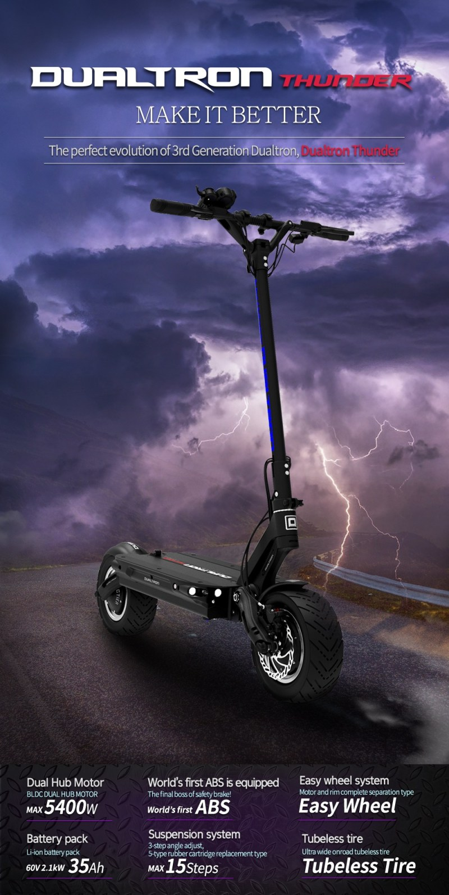

-
Confederate Bike
Confederate Bike adalah produsen sepeda motor jalanan eksotis Amerika. Confederate Motors
Inc. didirikan pada tahun 1991 oleh pengacara persidangan H. Matthew Chambers, sebagai inisiatif mencari
"desain tercerahkan melalui inspirasi Amerika sejati." Pada tahun 2017, Confederate Motors mengumumkan
rencana untuk mengganti nama dirinya menjadi Curtiss Motorcycles Inc. dan beralih ke sepeda motor
all-electric dengan kemitraan dengan Zero Motorcycles.
-
Mini Truckin
Mulai awal '59, banyak orang Amerika mulai mengambil truk kecil untuk melakukan pekerjaan
sehari-hari dan digunakan sebagai kuda kerja. Truk-truk besar V-8 sudah tersedia dan terjangkau, tetapi
tidak bisa mengalahkan keandalan dan keramaian dari truk-truk kecil. Hanya sedikit yang diketahui oleh
pabrikan truk kecil atau truk kecil ini, hanya masalah waktu sebelum orang dapat memotongnya dan
menjadikannya milik mereka.
-
Qooder
Satu-satunya konsep mobilitas roda empat bersandar. Yang terbaik dari dunia mobil dan
motor: kenyamanan dan stabilitas dikombinasikan dengan kelincahan dan kesenangan.
-
Dualtron Thunder
Dualtron Thunder adalah monster off-road yang serius. Jika Anda mencari skuter untuk
perjalanan sehari-hari, maka skuter itu mungkin lebih skuter daripada yang Anda butuhkan. Kecuali jika
Anda adalah The Rock, Anda tidak akan mengangkat skuter ini menaiki tangga atau menyelipkannya ke kereta
sepeda kereta bawah tanah. Namun, jika Anda mencari skuter mode tercepat, berperforma tinggi, anti
peluru, dan paling beast - maka Dualtron Thunder dari MiniMotors adalah pilihan terbaik Anda.

-
Afridza Munandar
Pebalap asal Indonesia Afridza Munandar meninggal dunia usai mengalami kecelakaan dalam
ajang balap Asia Talent Cup 2019 di Sirkuit Sepang, Malaysia, Sabtu (2/11/2019). Afridza terjatuh di
tikungan 10 saat balapan baru berjalan satu putaran. Kabar meninggalnya Afridza pun sempat menjadi
trending topic di Twitter. Banyak pihak yang menyatakan belasungkawa sekaligus memberikan penghormatan
kepada Afridzal, termasuk dari penyelenggara MotoGP Malaysia 2019. Melalui akun Twitter resmi @MotoGP,
jelang pemanasan Moto3, pihak MotoGP menyebut balapan yang dilangsungkan pada hari ini Minggu
(3/11/2019) dipersembahkan untuk Afridza Munandar. "Today, we race for Afridza Munandar Welcome to a
sombre Sepang as we prepare for the #Moto3 warm-up #MalaysianGP." tulis akun tersebut.